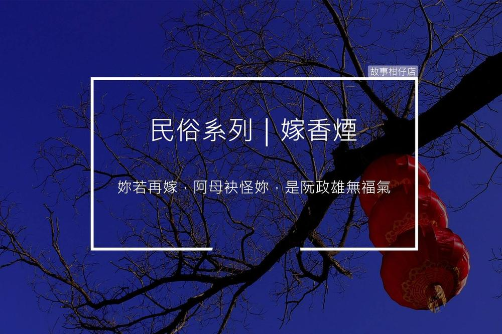

嫁香煙

嫁香煙，又稱「嫁神主牌」，如訂婚後男子死亡，則在葬禮前舉行冥婚儀式。男方家需若無其事請媒人去迎娶新娘，新娘來到門口，要慰問新郎病情，新郎家屬需回答「很快就痊癒」。
新娘進洞房後，換上喪服到丈夫棺材前哭。此時新娘需表明心意，若決心守寡，便在正廳目送丈夫棺木出殯；要再嫁的婦女則如一般人送到墓地。
〈嫁香煙〉
鞭炮霹哩啪啦炸開，穿著白紗澎裙的月雲跨出迎娶禮車，獨自走進李家大院。
正廳外停放著一具棺材，鮮花簇擁著年輕男子的黑白照。
月雲哽咽問：「政雄的身體好了嗎？」
反穿喪服的老嫗不停拭淚，擠出笑容答：「快好了、快好了。」
老嫗伸出枯槁雙手，撫著月雲的頭紗，「阿雲，多謝妳願意跟政雄完婚，我……」她轉頭看看黑白照，泣不成聲。
踩著全新婚鞋，月雲拖著裙襬走過靈堂，穿越正廳來到政雄房間。梳妝臺及床頭板都貼了雙喜字，一襲縞素喪服鋪在床沿。
梳妝鏡中的她面容姣好，表情漠然。環顧氣派寬敞的房間，政雄的枕頭還擺在床上，月雲嘆了口氣，嫁進來當少奶奶的夢，碎了。
「叩叩！」敲門聲響起，老嫗推門閃身進來，將一個絨布方盒推到月雲面前打開，她指著盒裡的一組藍寶石首飾說：「我只有政雄這個後生，這本來就是準備給伊娶媳婦的。」
她握著月雲纖纖雙手，眼淚又滾了出來：「以後妳再嫁，阿母袂怪妳，是阮政雄無福氣。」
「阿母，妳莫這樣說！」月雲低下頭，眼光卻被璀璨藍寶石緊緊粘住。
目送老嫗後，月雲換上喪服，對鏡皺起眼眉，撥亂一頭長髮，才顫巍巍步出房間。
穿過整列哀戚目光，月雲趴伏在棺木前放聲嚎哭，淒絕呼喚尪婿的名字，引得眾人跟著淚如雨下。沒有人發現，月雲的眼眶乾得擰不出一滴水。
相框裡的政雄溫柔微笑，月雲想起自家裡一疊疊綑好的聘金及那一組藍寶石，終於掉下淚來。
她感激涕零地想，多虧了政雄啊！從今往後，她要去找個真正屬意的男子，重新開始她的人生。
翻翻農民曆、挑個好日子，
一起來故事柑仔店
聽聽民俗的故事。